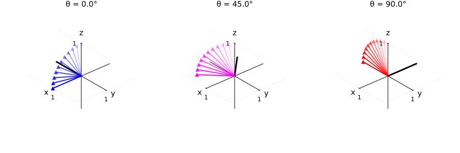
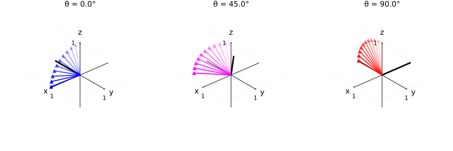

Rotation conventions
This page discusses the rotation conventions of the Julia package BlochSim
This page comes from a single Julia file: 01-rotate.jl.
You can access the source code for such Julia documentation using the 'Edit on GitHub' link in the top right. You can view the corresponding notebook in nbviewer here: 01-rotate.ipynb, or open it in binder here: 01-rotate.ipynb.
Setup
First we add the Julia packages that are need for this demo. Change false to true in the following code block if you are using any of the following packages for the first time.
if false
import Pkg
Pkg.add([
"BlochSim"
"InteractiveUtils"
"LaTeXStrings"
"LinearAlgebra"
"MIRTjim"
"Plots"
])
endTell this Julia session to use the following packages for this example. Run Pkg.add() in the preceding code block first, if needed.
using BlochSim: Spin, SpinMC, InstantaneousRF, RF, excite
using BlochSim: excite_bloch3
using MIRTjim: prompt
using Plots: annotate!, color, default, gui, plot, plot!, scatter!, scatter3d!, text
default(titlefontsize = 10, markerstrokecolor = :auto, label="", width = 1.5,
linewidth = 2)The following line is helpful when running this file as a script; this way it will prompt user to hit a key after each figure is displayed.
isinteractive() || prompt(:draw);Rotation convention
The convention for rotation by RF excitation in BlochSim is illustrated by the following plots.
round2(x) = round(x, digits = 2)
Mz0, T1_ms, T2_ms, Δf_Hz = 1, 400, 10, 9 # tissue parameters
xt = (; Mz0, T1_ms, T2_ms, Δf_Hz) # tuple
spin = Spin(Mz0, T1_ms, T2_ms, Δf_Hz)Spin{Float64}:
M = Magnetization(0.0, 0.0, 1.0)
M0 = 1.0
T1 = 400.0 ms
T2 = 10.0 ms
Δf = 9.0 Hz
pos = Position(0.0, 0.0, 0.0) cmHelper function to show rotation from equilibrium to transverse plane
function plot_tip(θ; # phase angle
α=π/2, # flip angle (radians)
color=:blue, excite=excite,
)
p = plot(
xaxis = ("", (-1, 1), ), xtick = [1],
yaxis = ("", (-1, 1), ), ytick = [1],
zaxis = ("", (-1, 1), ), ztick = [1],
aspect_ratio = 1,
framestyle = :origin,
size = (400, 400),
camera = (139, 30),
title = "θ = $(round2(rad2deg(θ)))°",
)
plot!([0, -sin(θ)], [0, -cos(θ)], [0, 0], lw=3, color=:black) # B₁
for (i, α) in enumerate(range(0, α, 11))
rf = InstantaneousRF(α, θ)
A, _ = excite(spin, rf)
v = Matrix(A) * [0, 0, 1]
alpha = i/11 # transparency
plot!([0, v[1]], [0, v[2]], [0, v[3]], lw=2; color, alpha,)
scatter3d!([v[1]], [v[2]], [v[3]]; alpha,
markercolor = color,
markershape = :utriangle, # lazy arrow tip
)
end
annotate!(p, [
(1.3, 0, 0, text("x", :left, 10)),
(0, 1.2, 0, text("y", :left, 10)),
(0, 0, 1.2, text("z", :bottom, 10)),
])
return p
end;Helper to show 3 different θ cases:
function plot_tips( ; excite=excite)
return plot(
plot_tip( 0, color=:blue; excite),
plot_tip(π/4, color=:magenta; excite),
plot_tip(π/2, color=:red; excite),
layout = (1,3),
size = (900, 300),
)
end
ptip1 = plot_tips( ; excite=excite)
prompt()As described in the docstring for rotatetheta!(A, α, θ), excitation here applies "left-handed rotation by angle α about an axis in the x-y plane that makes left-handed angle θ with the negative y-axis."
Comments within the function refer to p.27 of Dwight Nishimura's "Principles of Magnetic Resonance Imaging" (1996).
As illustrated by the black line above, the B₁ axis is [-sin(θ) -cos(θ) 0]
So α = π/2 and θ = 0 takes equilibrium magnetization [0, 0, 1] to [1, 0, 0].
The following excitation matrix examples illustrate.
θ=0
α_deg = 90 # flip angle °
α_rad = deg2rad(α_deg)
rf0 = InstantaneousRF(α_rad, 0)
A1, _ = excite(spin, rf0)
round2.(Matrix(A1))3×3 Matrix{Float64}:
0.0 0.0 1.0
0.0 1.0 -0.0
-1.0 0.0 0.0round2.(Matrix(A1) * [0, 0, 1])3-element Vector{Float64}:
1.0
0.0
0.0θ=π/2
rf2 = InstantaneousRF(α_rad, π/2)
A2, _ = excite(spin, rf2)
round2.(Matrix(A2))3×3 Matrix{Float64}:
1.0 0.0 0.0
0.0 0.0 -1.0
-0.0 1.0 0.0round2.(Matrix(A2) * [0, 0, 1])3-element Vector{Float64}:
0.0
-1.0
0.0The following figure uses the function excite_bloch3 that is based on analytical solutions to the eigenvalues of the 3×3 Bloch matrix. It is designed to use the same rotation conventions for self consistency.
ptip3 = plot_tips( ; excite = (spin, rf) -> excite_bloch3(spin, rf; warn=false))
prompt()Reproducibility
This page was generated with the following version of Julia:
using InteractiveUtils: versioninfo
io = IOBuffer(); versioninfo(io); split(String(take!(io)), '\n')12-element Vector{SubString{String}}:
"Julia Version 1.12.6"
"Commit 15346901f00 (2026-04-09 19:20 UTC)"
"Build Info:"
" Official https://julialang.org release"
"Platform Info:"
" OS: Linux (x86_64-linux-gnu)"
" CPU: 4 × AMD EPYC 7763 64-Core Processor"
" WORD_SIZE: 64"
" LLVM: libLLVM-18.1.7 (ORCJIT, znver3)"
" GC: Built with stock GC"
"Threads: 1 default, 1 interactive, 1 GC (on 4 virtual cores)"
""And with the following package versions
import Pkg; Pkg.status()Status `~/work/BlochSim.jl/BlochSim.jl/docs/Project.toml`
[6e4b80f9] BenchmarkTools v1.8.0
[5c0f8cbe] BlochSim v0.8.1 `~/work/BlochSim.jl/BlochSim.jl`
[e30172f5] Documenter v1.17.0
[e24c0720] ExponentialAction v0.2.10
[f6369f11] ForwardDiff v1.3.3
[b964fa9f] LaTeXStrings v1.4.0
[98b081ad] Literate v2.21.0
[170b2178] MIRTjim v0.26.0
[91a5bcdd] Plots v1.41.6
[1986cc42] Unitful v1.28.0
[b77e0a4c] InteractiveUtils v1.11.0
[37e2e46d] LinearAlgebra v1.12.0
[44cfe95a] Pkg v1.12.1
[9a3f8284] Random v1.11.0This page was generated using Literate.jl.